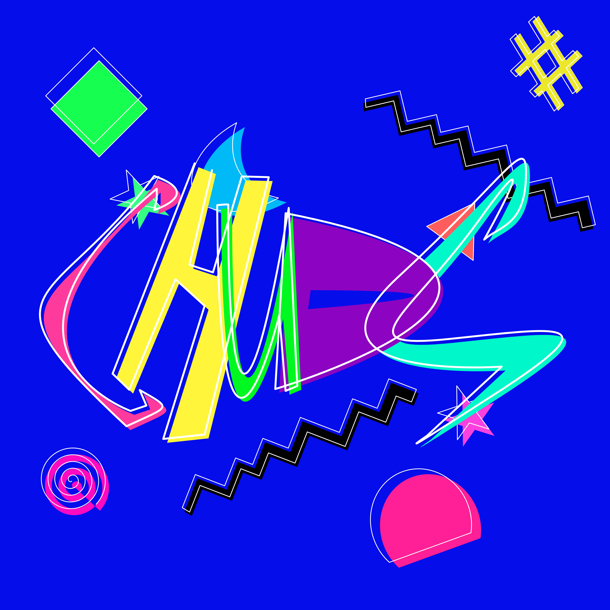

My Semi-Professional Magic: the Gathering Team

In February of this year, 2 of my friends and I started our Semi-Professional Magic: the Gathering team- Team CHUDS. CHUDS is an acronym standing for Chicago Humans Undermining Deals Seditiously. We describe ourselves as the Harlem Globetrotter of our format, cEDH. As part of this team we have been working on making MTG content about cEDH that is deeply unserious, yet still informative. Here is an example of one of our more popular podcast epidsodes.